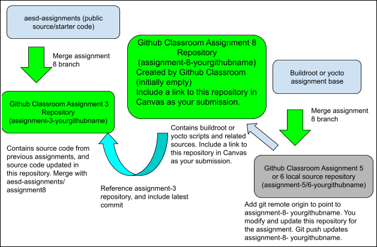

Assignment 8: Char Driver and Multithreading
Please find the link to create your repository for this assignment in the "GitHub Repo Creation Links" section under course resources. You may find course resources on the left side pane of your module view.
Linux Device Drivers book chapters 1-5
You will start with an empty project submission repository, and fill it with the content of your assignment 5 local repository using these commands on your local buildroot-assignments repository (substitute to use your assignment 6 repository if you would like to use yocto for your submission instead of buildroot.)
git remote rename origin assignment-5-remote
git remote add origin <your github classroom submission repo created with the link above>
git push origin main

Note: The following links are external and will open in new tab.
Pick either the Buildroot or Yocto implementation from Assignment 7 (which are located in assignment 5 or 6 repositories) to use as the basis for your assignment and push to your submission repository. You can use either Buildroot or Yocto for this assignment. For a buildroot implementation, use the steps below. For yocto implementation, substitute references to the buildroot-assignments-base repository with yocto-assignments-base repository in the instructions below.
git fetch buildroot-assignments-base
This step assumes you’ve already created the remote using git remote add buildroot-assignments-base https://github.com/cu-ecen-aeld/buildroot-assignments-base.git in assignment 5. If you started from a new repo you’ll need to re-run the git remote-add step before attempting to fetch.
git merge -X theirs buildroot-assignments-base/assignment8
If you notice merge conflicts during the merge step with the assignment-autotest submodule, use:
git checkout --theirs aesd-assignments/assignment8 -- assignment-autotest
git commit
git submodule update --init --recursive
Using your assignments 3 repository, complete the following steps to pull in content from the aesd-assignments repository assignment-8 branch
git fetch assignments-base This step assumes you’ve already created the remote using git remote add assignments-base git@github.com:cu-ecen-aeld/aesd-assignments.git in the previous assignment. If you started from a new repo you’ll need to re-run the git remote add step before attempting to fetch.
git merge -X theirs assignments-base/assignment8
If you notice merge conflicts during the merge step with the assignment-autotest submodule, use:
git checkout --theirs git assignments-base/assignment8 -- assignment-autotest
git commit
git submodule update --init --recursive
Modify the TODOs in the main.c to complete the instructions below
Add source code, makefile and init scripts needed to install a /dev/aesdchar device. Ultimately this device should be installed in your qemu instance, however you may also wish to test on your host virtual machine during development. If you are testing on your virtual machine, please make sure you have a snapshot taken before starting work on the assignment so you can recover in case you corrupt your virtual machine disk. Your /dev/aesdchar device should use the circular buffer implementation you developed in assignment 7 plus new code you add to your driver to:
Allocate memory for each write command as it is received, supporting any length of write request (up to the length of memory which can be allocated through kmalloc), and saving the write command content within allocated memory.
The write command will be terminated with a \n character as was done with the aesdsocket application.
Write operations which do not include a \n character should be saved and appended by future write operations and should not be written to the circular buffer until terminated.
The content for the most recent 10 write commands should be saved.
Memory associated with write commands more than 10 writes ago should be freed.
Write position and write file offsets can be ignored on this assignment, each write will just write to the most recent entry in the history buffer or append to any unterminated command.
For the purpose of this assignment you can use kmalloc for all allocations regardless of size, and assume writes will be small enough to work with kmalloc.
Return the content (or partial content) related to the most recent 10 write commands, in the order they were received, on any read attempt.
You should use the position specified in the read to determine the location and number of bytes to return.
You should honor the count argument by sending only up to the first “count” bytes back of the available bytes remaining.
Perform appropriate locking to ensure safe multi-thread and multi-process access and ensure a full write file operation from a thread completes before accepting a new write file operation.
Your implementation should print the expected contents when running the drivertest.sh script at https://github.com/cu-ecen-aeld/assignment-autotest/blob/master/test/assignment8/drivertest.sh.
Modify your socket server application developed in assignments 5 and 6 to support and use a build switch USE_AESD_CHAR_DEVICE, set to 1 by default, which:
Removes timestamp printing.
Ensure you do not remove the /dev/aesdchar endpoint after exiting the aesdsocket application.
Redirects reads and writes to /dev/aesdchar instead of /var/tmp/aesdsocketdata
In addition, please ensure you are not opening the file descriptor for your driver endpoint from aesdsocket until it is accessed.
Test with sockettest.sh script used with assignment 5 (which doesn’t validate timestamps), which you can find at https://github.com/cu-ecen-aeld/assignment-autotest/blob/master/test/assignment5/sockettest.sh.
Follow the instructions printed on your screen when you run ./full-test.sh to test your driver implementation, and your aesdsocket native application using drivertest.sh and sockettest.sh against your native application from your assignment 3 repository.
Modify your buildroot or yocto implementation in your assignment 8 repository to install updated versions of the aesd socket server application and aesdchar driver, as well as appropriate startup scripts to automatically start both driver and application.
You have several options for starting your driver, you can use insmod or modprobe, there are no requirements other than ensuring your driver automatically starts at boot time.
Verify your buildroot or yocto implementation by running ./full-test.sh from your assignment 8 repository.
Tag the assignment with assignment-<assignment number>-complete once the final commit is pushed onto the respective repositories. The instructions to add a tag can be found here
See https://www.kernel.org/doc/html/latest/dev-tools/kmemleak.html for full detail. This is not a requirement but is helpful for validating your implementation. Steps below are detailed for buildroot. Yocto instructions are not provided but would require making the kernel related changes discussed below using the kernel menuconfig strategy discussed here
Run make menuconfig from the buildroot directory and setup a cutom linux kernel defconfig file at ../base_external/configs/linux.config under the "Kernel" submenu. This will allow you to track your changes to kernel configuration in your base_external tree. Use the previous kernel set as BR2_LINUX_KERNEL_CUSTOM_CONFIG_FILE in your aesd_qemu_defconfig file as the initial content of this file by copying from the buildroot directory to your base_external path specified in the kernel submenu. You can do this with command cp buildroot/board/qemu/aarch64-virt/linux.config base_external/configs/linux.config
make linux-menuconfig from buildroot directory
Enable the following options:
kernel hacking -> kernel debugging
kernel hacking -> memory debugging -> kernel memory leak detector
kernel hacking -> memory debugging -> Simple test for the kernel memory leak detector (This option would install a module which would have memory leaks.)
kernel hacking -> memory debugging -> Maximum kmemleak early log entries - set to 4096 (see https://stackoverflow.com/questions/55764173/kernel-memory-leak-detector)
kernel hacking->Sample Kernel Code
Save the configuration using save-config.sh, build using build.sh and run qemu.
Build and boot up the resulting image in qemu. If the debugfs isn't already mounted, mount with:
mount -t debugfs nodev /sys/kernel/debug/
Enter the following commands on terminal to check if the kernel memory leak detector has been properly installed and is detecting memory leaks. This loads a module that deliberately leaks memory called “kmemleak-test”
echo clear > /sys/kernel/debug/kmemleak
modprobe kmemleak-test
echo scan > /sys/kernel/debug/kmemleak
cat /sys/kernel/debug/kmemleak
You should see memory leaks identified, which proves your leak test kernel config is working.
rmmod kmemleak-test
Reboot and repeat steps 4 and 5 using your module instead of kmemleak-test, removing and adding your module after clearing any existing memory leaks.
You should see no memory leaks identified by the scan step for /sys/kernel/debug/kmemleak when loading your module.
Your driver should pass the drivertest.sh script provided with the assignment
Your qemu instance should pass the sockettest script, this time writing and reading from only the /dev/aesdchar device instead of /var/tmp/aesdsocketdata.
Your implementation should not crash or have memory leaks.
Your implementation should use proper locking methods to ensure safe access from multiple threads or processes.
Your project should contain build.sh, clean.sh, and runqemu.sh scripts which function as specified in previous assignments, and can successfully clean, build, and run your project without user interaction for automated build testing.
Your submission repository should contain a working buildroot or yocto implementation.
Your buildroot or yocto implementation should reference a commit in your assignments 3 and later repository containing the code added for this assignment.
Attempts to run full-test on qemu fails with rmmod: Can't unload aesdchar resource temporarily unavailable
If your test script fails during the driver test step due to failure to unload your driver, please ensure you are not opening the file descriptor for your driver endpoint from aesdsocket until it is accessed.
If your sockettest application opens the file descriptor at startup and does not close it, this will prevent the script from successfully testing your driver in isolation by unloading/reloading it. Please modify your aesdsocket application to only open the file descriptor for your /dev/aesdchar device when reading/writing and otherwise close it when not in use or before initial use